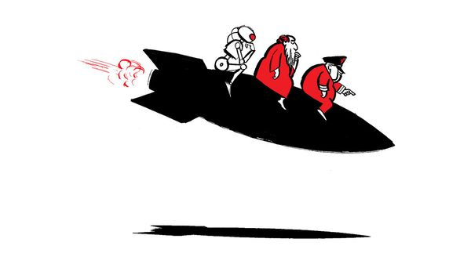
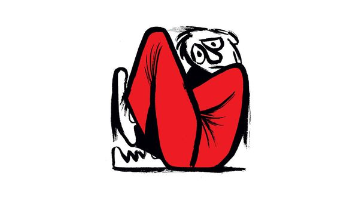

Jul 10, 2026 06:57 AM

Letters are welcome via email to letters@economist.com
Find out more about how we process your letter
You reported on why big artificial-intelligence labs are hiring so many philosophers and noted its impact on the ethics of war (“Computo, ergo sum”, June 27th). Philosophers excel at formulating questions, but they have no agreed answers to how military objectives should be weighed against civilian deaths. For example, if a military objective of killing a wartime leader in a foreign country can be achieved only at the expense of the deaths of innocent civilians, what is the maximum number of such deaths that is acceptable? This number, known as the non-combatant casualty cut-off value (NCV), is often specified by military authorities but has varied widely (for example, between 0 and 30) across campaigns and over time. Its variability betrays the uncertainty of those who set it.
There is no “correct” NCV for human judges or for AI systems. If we knew how many future deaths a wartime leader would be responsible for the problem would resolve itself into the well-known trolley dilemma. But we don’t know that. And even if we did, there is no universally acceptable solution to that dilemma.
Nigel Harvey
Professor of judgment and decision research
University College London
“Cancelled penalty” (June 27th) was correct in its central contention about America’s waiver of sanctions on Iranian oil. It is a huge concession. But what looks significant on paper—an apparent aberration against more than 40 years of sanctions pressure—is decidedly less so in reality. The twin pressures of European and British sanctions will hold back any potential flood of Western buyers. Instead, the waiver will chiefly facilitate Iranian state actors’ exports to pre-existing trading partners.
Then there is the prospect of the Strait of Hormuz being closed again with comparative ease, which still lingers over the global economy. All the while, it is entirely possible that Iran continues to build up its nuclear capability.
What could mark a break is if alternative trading routes that bypass the strait were to be established, which could check Iranian leverage. The big question here is not only how quickly this can be achieved, but whether the attendant legal and political agreements can be reached. For all the talk of waivers and sanctions, this is the dime on which the global economy might turn in the future.
James Willn
Reed Smith
Dubai
The Iran war is indeed the third shock in a decade to hit Africa after covid-19 and Russia’s invasion of Ukraine (“Third time unlucky”, June 20th). But the deeper problem is that many African economies still lack quick, affordable financing when such shocks arrive.
Kenya illustrates this. Reserves are being rapidly eroded and fuel protests have turned deadly, yet the government’s main recourse is slow; a fresh $600m loan from the World Bank now and probably an IMF facility later. Full IMF arrangements typically involve months of negotiation over conditions. That is time a country in a live currency crisis can least afford. Kenya is far from alone in this bind. Egypt, Ethiopia, Mozambique and Rwanda also face the same choice between burning through reserves and waiting on a negotiated rescue.
The architecture for faster support already exists and has worked for Africa before. In September 2022 the IMF opened a temporary food-shock window, which let countries hit by the Ukraine war’s effect on grain and fertiliser prices borrow on top of normal limits, with minimal conditionality and no lengthy programme required. By the time it closed in mid-2023 it had disbursed $1.8bn across six countries, including Burkina Faso, Guinea, Malawi and South Sudan.
That window should be reopened and adapted into an oil-shock window for net energy importers exposed to the shocks from the Iran war, with comparable access limits and the same rapid disbursement. Although this would not solve Africa’s underlying debt burden, it would recognise that liquidity, not just solvency, determines whether a price shock becomes a currency crisis.
Faith Nyabuto
Cambridge
Your leader on falling academic standards (“Don’t dumb down”, June 27th) rightly noted that pushing young people up the educational ladder without the skills to match helps no one and is, at its core, cowardly. Yet the challenge of cheating posed by AI may carry its own corrective.
By collapsing the cost of fabricated coursework, generative AI confronts every university with a blunt choice: pay for much costlier enforcement, or in effect abandon the pretence of academic integrity. Institutions with thin defences and less academic intakes will rationally give up, lowering fees and operating openly as credential mills. Those with serious invigilation and abler students will instead double down, as Harvard did recently by capping the number of A grades handed out in each course to roughly 20% of enrolled students (the policy comes into effect next year). Colleges of this type will still charge a premium for a degree that still certifies genuine learning. This would result in what economists call a separating equilibrium, the market sorting what administrators cannot.
This need not be lamented. For the many jobs that reward reliability and persistence above any particular syllabus, a degree was always mostly a signal. An honest credential may serve its holder better, and far more cheaply, than one that pretends otherwise.
Peter Donahue
Houston
Degree standards are experiencing astonishing grade inflation. About 30% of students now achieve a first-class degree in Britain. In the 1960s, usually only one or two students would achieve this elusive prize, and sometimes none at all.
Policymakers should indeed “widen the ways in which people can continue learning after they leave school”. As adult education is a permissive rather than statutory level of education the starving of local government funding has caused the shredding of the once valuable network of adult centres with their attractive courses across so many subjects. Now the only service in many areas is the excellent University of the Third Age, which utilises voluntary pro bono teachers (such as myself) in classes available at a small subscription fee. One hopes that in this latter area at least the u3a model can be used as a cost-effective provision in what is at present a wilderness.
Bill Jones
Director of extra-mural studies at Manchester University, 1986-93
Beverley, East Yorkshire

Tall men earn more, date more and are generally happier all round, you say (Graphic Detail, June 19th). As a six-foot, four-inch male I would like to point out that it’s not all a bed of roses. The world is designed by short people for short people. Your privileged tall man is crushed into small aircraft seats and bangs his head on low doorways. Hotel beds are often too short. There have been times in my life when I have had to order shoes from abroad. And then there’s clothing and pants that finish at mid-calf. There seems to be a convention in clothing stores that all large and extra-large sizes are placed on the bottom shelves, requiring tall men to get on hands and knees to retrieve an article.
So it does seem an act of celestial justice that we score better with the ladies.
BILL CLARKE
Madrid
Spot-on as your June 27th obituary of Alan Greenspan was, it might have added a detail pertinent to The Economist. Economics coverage in the paper in the 1960s relied heavily on a single resident genius, Norman Macrae. Clandestine extra input to both Macrae and coverage of the United States was supplied by Alan Greenspan. Each week a junior in the Washington office would make two telephone calls to New York: one was to Henry Kaufman, chief economist at Salomon Brothers; the second was to Greenspan, then main partner of Townsend Greenspan.
His dry wit, analysis and parsing of often obscure labour and stock level statistics much deepened The Economist’s columns at the time.
Andrew Knight
Editor of The Economist, 1974-86
Shipston-on-Stour, Warwickshire
“Warrington is not a glamorous place”, as you acknowledge in your article on the economic miracle of this town in northern England (“Meet the Warrington model”, June 27th). You mention the Royal Society of Arts ranking the town last out of 325 places for cultural amenities (yes, even behind Luton).
As Eric Turner, a local artist who’s been called Warrington’s secret Lowry, would have said, “Rubbish…have they ever been to Widnes?”
Nick Rigby
Cambridge
Does anyone remember the contest from some years back? First prize: one week in Warrington. Second prize: two weeks in Warrington.
Henry Ma
Manila